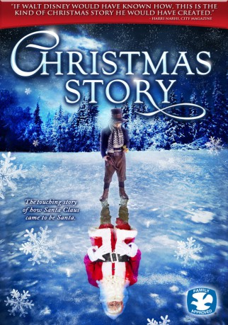

#7826 Wunder einer Winternacht - Die Weihnachtsgeschichte
Alternativ: Christmas Story (Englischer Titel)
 
 IMDB-Wertung: 7.0 / 10
IMDB-Wertung: 7.0 / 10  Metascore: 0
Metascore: 0 
Hundreds of years ago in Lapland, a little boy named Nikolas loses his family in an accident. The villagers decide to look after the orphaned boy together. Once a year - at Christmas - Nikolas moves to a new home. To show his gratitude, Nikolas decides to make toys for the children of the families as good-bye presents. Over the years, Nikolas's former adoptive families become many, and soon almost every house has presents on its doorstep on Christmas morning. At thirteen, Nikolas is sent to live and work with Iisakki, a grumpy old carpenter, who forbids Nikolas to continue making presents for Christmas. Gradually, however, Nikolas wins Iisakki's trust. Together they begin to look after the Christmas traditional that Nikolas has begun. When the aged Iisakki has to leave Nikolas and move away, the tradition of Christmas presents is once again at risk. Thankfully, Nikolas comes up with a solution that brings children joy every Christmas, even continuing to today.
Jahr: 2007
Dauer: 77 Minuten
FSK: 6
Land: Finnland Studio: New KSMTonspuren:
Untertitel:
Auflösung: 720p (1280x546) Größe: 2560 MB
Genre: Drama, Fantasy, Familie, Weihnachten
Regisseur: Juha Wuolijoki
Drehbuch: Marko Leino
Soundtrack: Leri Leskinen
Darsteller:
- Kari Väänänen als Iisakki
- Mikko Kouki als Eemeli
- Laura Birn als Aada
- Matti Ristinen als Einari
 Ville Virtanen als Henrik
Ville Virtanen als Henrik- Lisa Sjöholm als Laura
 Katherine Borowitz als Aada / Hilda
Katherine Borowitz als Aada / Hilda- Noah Emmerich als Nikolas
 John Turturro als Iisakki
John Turturro als Iisakki- Hannu-Pekka Björkman als Nikolas
- Otto Gustavsson als Nikolas 13-vuotiaana
- Jonas Rinne als Nikolas 7-vuotiaana
- Minna Haapkylä als Kristiina
- Mikko Leppilampi als Hannus
- Oskari Heimonen als Eemeli 11-vuotiaana
- Roi Ron als Eemeli 5-vuotiaana
- Nella Siilasmaa als Aada 9-vuotiaana
- Antti Tuisku als Mikko
- Alpo Sipilä als Mikko 9-vuotiaana
- Eeva Soivio als Aleksandra
- Mauri Heikkilä als Gideon
- Pirjo Leppänen als Hilla
- Saara Pakkasvirta als Meeri
- Matti Rasilainen als Hermanni
- Nora Syrjä als Elsa
- Mikko Rokka als Heino
- Jennifer Barnhart als Aleksandra / Meeri
- Ron Crawford als Gideon
Datei: X:\2007(N-Z)\Wunder einer Winternacht - Die Weihnachtsgeschichte (2007, FSK6, 1280x546).mkv seit 20.12.2017
Festplatte: HD 2007(A-Z)-2008(A-F)
 Es gibt insgesamt 56 Filme in der Gruppe '2007(N-Z)'
Es gibt insgesamt 56 Filme in der Gruppe '2007(N-Z)'